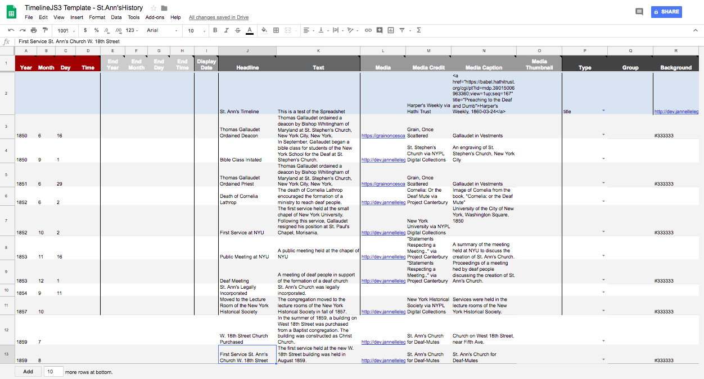
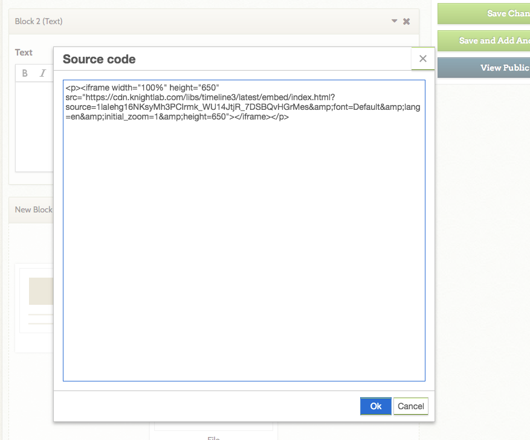

TimelineJS is a tool for creating interactive, and embeddable, timelines. Use a google spreadsheet to organize dates and media, then upload it to the TimelineJS website. Customize your timeline and embed it on a webpage, including pages on WordPress and Omeka.
Embedding with TimelineJS
Note: You need to have access to Google Sheets to use this tool
1. Navigate to the TimelineJS website. The folks at KnightLab have done a great job creating a step-by-step tutorial with additional links at the bottom of the page for Tips and Frequently Asked Questions. Refer to these links if you have any issues with this tutorial.
2. Copy the TimelineJS template on the TimelineJS website to your Google Drive and add events to your timeline. 

3. Begin to modify the Timeline Template. (Note: You can rename the template to suit your project, it will not affect the final timeline. Do not rename or delete any columns. Simply leave the fields blank if they are not useful for you.)
- Start with Row 2 (which is marked with a light blue background). This row creates the title slide for your timeline.
- No dates are needed, leave the A-I fields blank.
- Add a title and description to the “Headline” and “Text” fields.
- Add an image (or other media) to the title slide from your Omeka collection (or another online source) by pasting the image URL from an item in your Omeka site. Be sure to include image credit information in columns M and N.
- Or set a background image by pasting the image URL from an item in your Omeka collection (or another online source) by pasting the URL in the “Background” field.
- Add items and events to your timeline by selecting the fields in each row. Begin by deleting the examples in the spreadsheet. Click the Add button at the bottom of the spreadsheet to add additional rows. Note, be sure to remove any extra (blank) rows from the bottom of the spreadsheet before you finish.
- Add date information. Note: you do not need full date information. At least a year should be included. Events also do not have to appear in order.
- Add a headline- the short text that will be visible on the timeline.
- Add a description – brief text that will appear when the event is selected on the timeline.
- Add an image (or other media) for each event by pasting the image URL from items in your Omeka site. Be sure to add image credit information and captions. If you would like the source text to be linked, you can add the hyperlink using the following: <a href=”your source url”>text</a>
- You may group events using the “Group” column. Enter a category or theme.
- You may style the slides by adding background images or solid colors using the “Background” column.
4. After you have added timeline information to your GoogleSheet (and confirmed that there are no blank rows), click on File and select Publish to the Web.. from the dropdown menu.
- Click Publish in the window that appears and select OK when asked “Are you sure?”
- Close the “Publish to the Web” window
- Close the dialog box
- Copy the URL in your browser’s address bar, minus the “/edit” (See the Timeline JS website for explanation. (Do not copy the link which Google provides in the “publish” dialog box)
5. Return to the TimelineJS website. Scroll down to Step 3 and enter your URL in the “Google Spreadsheet URL” field. Note: there are several optional settings available below. After you have confirmed that your timeline appears correctly, you can return to these options and modify sizing, language, fonts, start slide, zoom, and other features.
6. Scroll down to Step 4. Click the blue Preview button and confirm that your timeline appears correctly and without errors.
- Note: if you find spelling errors or would like to make aesthetic changes, you may repeat steps 5 and 6 to preview the updated page. Any changes made in the spreadsheet will be public and updated in the timeline whether or not you repeat these steps.
To embed the timeline in your Omeka Exhibit, copy the code from the Embed field (above the blue Preview button on the TimelineJS website).
- In another window, navigate to your Omeka site and open the Exhibit page on which you would like your Timeline to appear.
- Click to add a new Text block to the page.
- In the Text Block, click the Source Code button.

- In the text field that opens, paste the Embed code you copied from the TimelineJS page (in step 7). Click Ok.

- Confirm that an image of your Timeline is visible in the Text block. (Note; the features of your Timeline will not work on the Admin side of your page.) Click Save Changes. To view and use your Timeline, click View Public Page.

Note that if you are not using Omeka.net, you may need to update the HTML permissions for your Omeka site to embed visualizations. You can do so by clicking Settings and navigating to the Security tab. In the HTML Filtering section, add iframe to the list of Allowed HTML Elements. Then in the Allowed HTML Attributes section, add iframe.src,iframe.width,iframe.height to the list (pay attention to spacing and punctuation). Click to Save Changes.